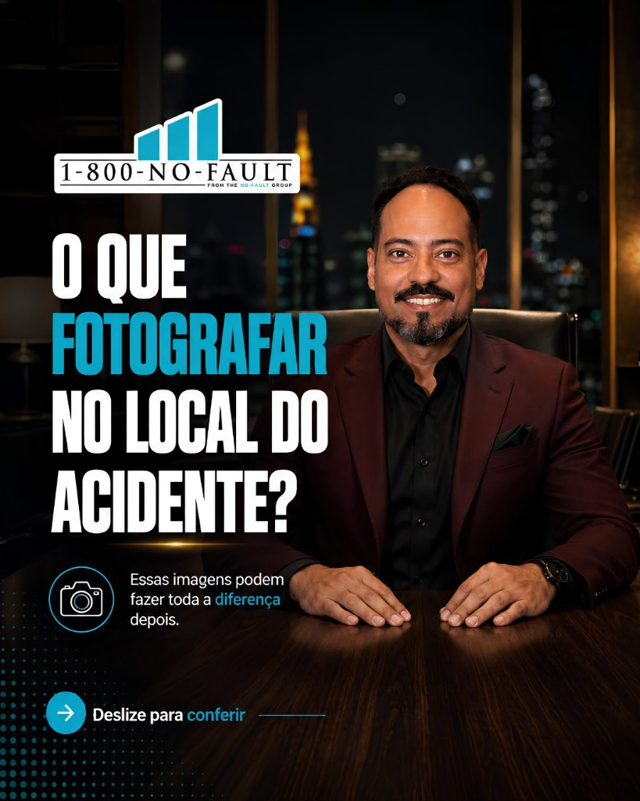
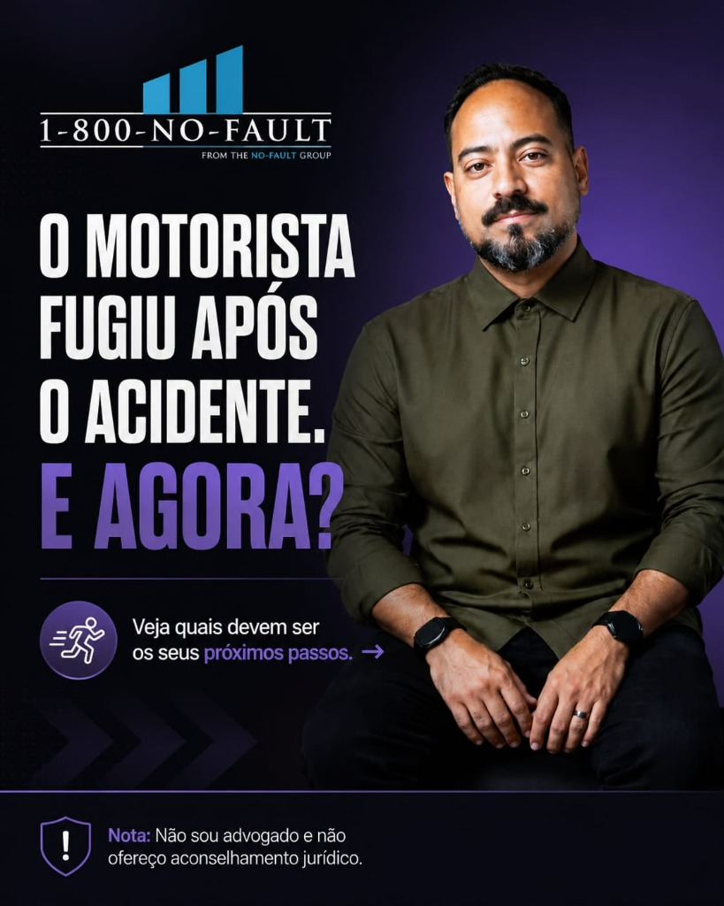
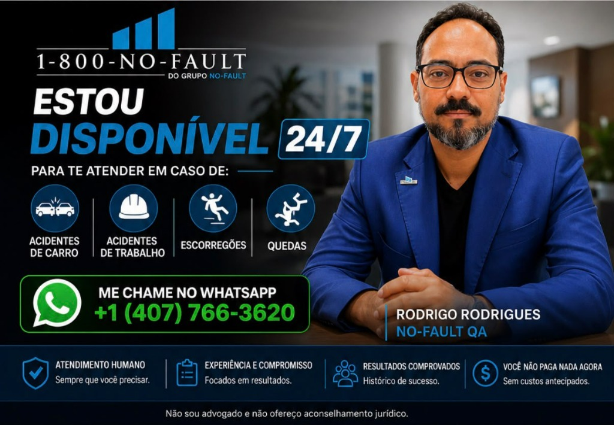

Os 3 Maiores Erros Após um Acidente
Eles podem prejudicar seus direitos e até comprometer uma futura indenização.
Tirar Dúvida no WhatsAppNão cometa erros que possam prejudicar seus direitos e comprometer uma futura compensação. Fale diretamente com Rodrigo Rodrigues no WhatsApp e receba triagem personalizada e sigilosa em português.
Selecione as opções abaixo para iniciar o atendimento prioritário:

Especialista em Apoio e Triagem de Acidentados nos EUA
Apoio acolhedor e atencioso em português sempre que você precisar.
Focados nos seus direitos e na melhor estratégia para o seu caso.
Histórico sólido conectando pessoas a advogados de excelência.
Você não gasta nada agora. O foco é na sua recuperação e compensação.
Eles podem prejudicar irremediavelmente seus direitos e comprometer qualquer futura indenização. Veja o que você jamais deve fazer:
Na Flórida existe a Regra dos 14 Dias (PIP). Se você não receber avaliação médica qualificada dentro deste prazo, você pode perder imediatamente até $10.000 em cobertura de despesas médicas do seguro obrigatório. Mesmo sem dores fortes aparentes no dia, lesões de coluna e articulações costumam aparecer dias depois.
As seguradoras americanas trabalham para minimizar o valor que pagam a você. O agente de seguros ligará oferecendo um valor baixo "rápido" para que você assine uma renúncia total de direitos. Nunca dê depoimento gravado nem assine papéis antes de receber orientação especializada.
Muitos imigrantes deixam de chamar a polícia ou recolher provas por medo de perguntas sobre status imigratório. Nos EUA, a lei protege qualquer vítima de acidente, independente da sua situação de visto. O boletim policial (Police Report) e fotos dos veículos, placas e lesões são a base para sua indenização.
Cometeu algum desses passos ou está em dúvida sobre o que fazer agora?
Falar com o Rodrigo no WhatsApp Agora
Essa é uma das situações mais comuns e angustiantes na Flórida e nos Estados Unidos. Muitas vítimas acham que, porque o causador fugiu, estão desamparadas. Isso não é verdade!
Conectamos você aos advogados parceiros certos para cada tipo de lesão ou acidente ocorrido nos EUA.
Batidas traseiras, colisões em cruzamentos, capotamentos, colisões com pedestres, motos e caminhões comerciais.
Lesões ocorridas no ambiente laboral (Workers' Compensation e reclamações contra terceiros negligentes).
Quedas causadas por pisos molhados sem aviso, buracos, desníveis e iluminação inadequada (Premises Liability).
Do primeiro "oi" no WhatsApp até o encaminhamento com advogados experientes, tudo é rápido, acolhedor e transparente.
Você envia uma mensagem para o Rodrigo relatando brevemente o que aconteceu. Atendimento ágil e 100% em português.
Avaliamos as circunstâncias do acidente, documentação policial, fotos e encaminhamentos médicos necessários.
Conectamos você diretamente com escritórios de advocacia parceiros e licenciados, especialistas no seu tipo de caso.
Os advogados atuam no modelo de contingência. Não há mensalidades nem custos do seu bolso durante o processo.

Mudar de país e construir uma vida nos Estados Unidos exige coragem. Quando um acidente inesperado acontece, o medo da língua, a falta de conhecimento das leis e o receio pelo status de imigração podem paralisar você.
Rodrigo Rodrigues atua como a ponte de confiança entre a comunidade brasileira/latina e a rede jurídica americana de acidentes (1-800-NO-FAULT). Com presença forte em Orlando e atendimento abrangente, sua missão é garantir que você não seja enganado por seguradoras e tenha o suporte médico e legal de primeira linha.
Informação clara para que você não caia em armadilhas de seguradoras nos Estados Unidos.

Respostas diretas para as perguntas mais comuns de quem sofreu um acidente nos EUA.
SIM, ABSOLUTAMENTE! A lei americana de compensação por acidentes e danos pessoais protege qualquer indivíduo que esteja em solo americano, independente do seu status migratório. Nem a polícia nem os advogados parceiros compartilharão seu status com autoridades de imigração. Você tem pleno direito a atendimento médico e indenização justa.
Você não paga absolutamente nada adiantado. O atendimento do Rodrigo e a consulta com os advogados credenciados são 100% gratuitos. Os advogados parceiros trabalham no sistema de contingência ("No Win, No Fee"): eles apenas recebem uma porcentagem pré-acordada sobre o valor da indenização que conquistarem para você da seguradora. Se não houver indenização, você não deve nada.
A Flórida é um estado que adota o sistema "No-Fault" (sem culpa), exigindo que todo motorista tenha a cobertura PIP (Personal Injury Protection). Para ter direito a até $10.000 em despesas médicas cobertas pelo PIP, a lei exige que você consulte um médico ou clínica qualificada em até 14 dias após o acidente. Se você deixar passar esse prazo, perde esse benefício indispensável!
Mesmo quando o causador foge (Hit and Run), você ainda possui direitos fundamentais. Através da cobertura PIP e da cobertura de motorista sem seguro (Uninsured Motorist - UM), sua própria seguradora pode ser acionada para cobrir seus custos médicos, salários perdidos e compensação por dor e sofrimento. Fale com o Rodrigo imediatamente para saber como documentar isso da forma correta.
A lei americana proíbe qualquer retaliação ou demissão ilegal pelo simples fato de o funcionário solicitar o seguro de compensação de trabalhadores (Workers' Comp). Além disso, em muitos casos, a negligência envolve terceiros (como donos de imóveis, fornecedores ou fabricantes de ferramentas), permitindo uma ação paralela de indenização expressiva.
Uma indenização bem conduzida pode cobrir: todas as despesas de hospital, exames, cirurgias e fisioterapia; salários e rendas que você deixou de ganhar por estar incapacitado; conserto ou pagamento do valor de tabela do veículo com perda total; e indenização monetária por dor física, traumas e sofrimento.
Tem outra dúvida específica sobre a sua situação?
Perguntar Diretamente no WhatsAppA cada dia que passa, câmeras são apagadas, testemunhas mudam de contato e os prazos legais se encurtam. Fale com o Rodrigo Rodrigues agora mesmo e tenha clareza do seu caso.